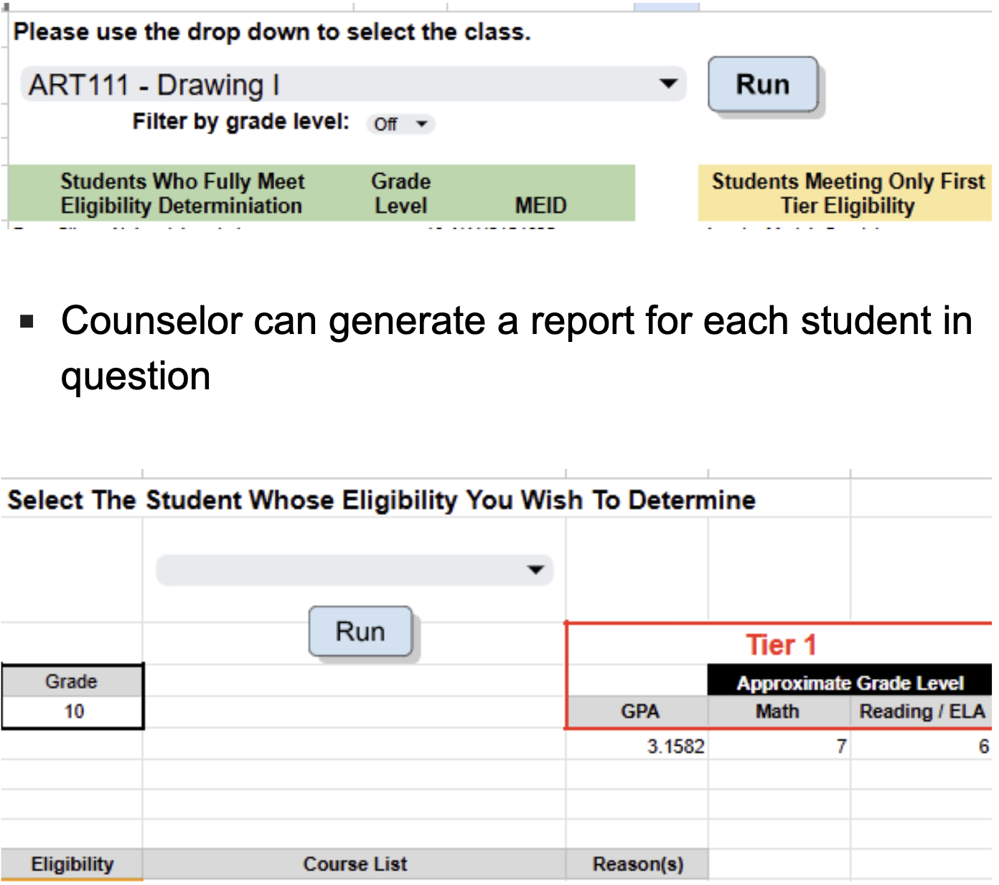
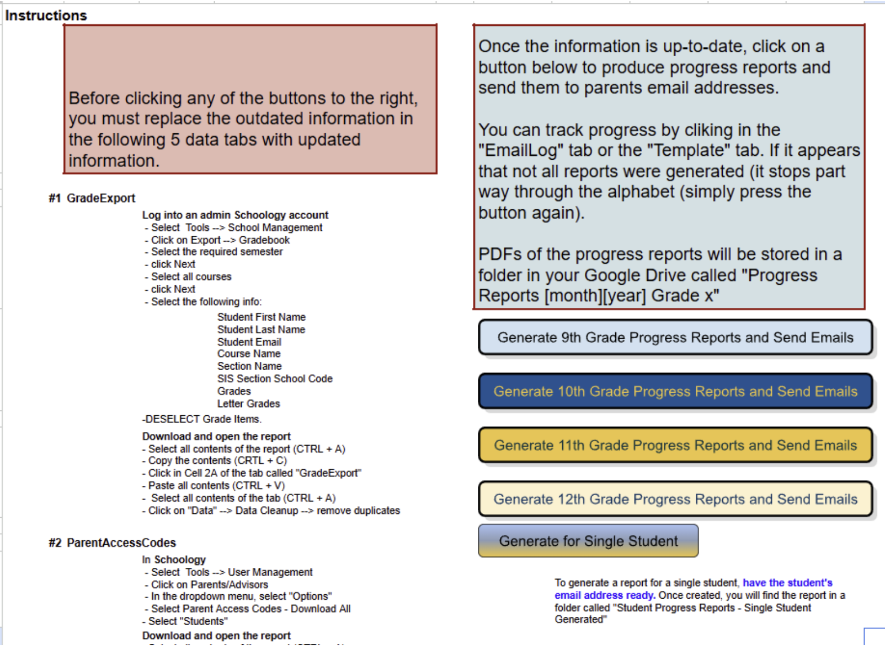
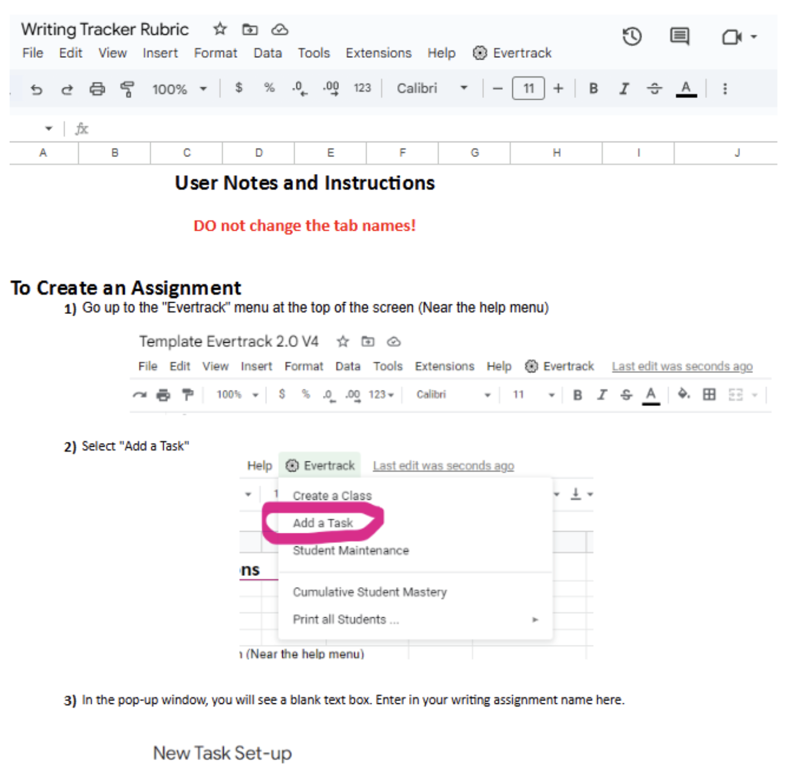
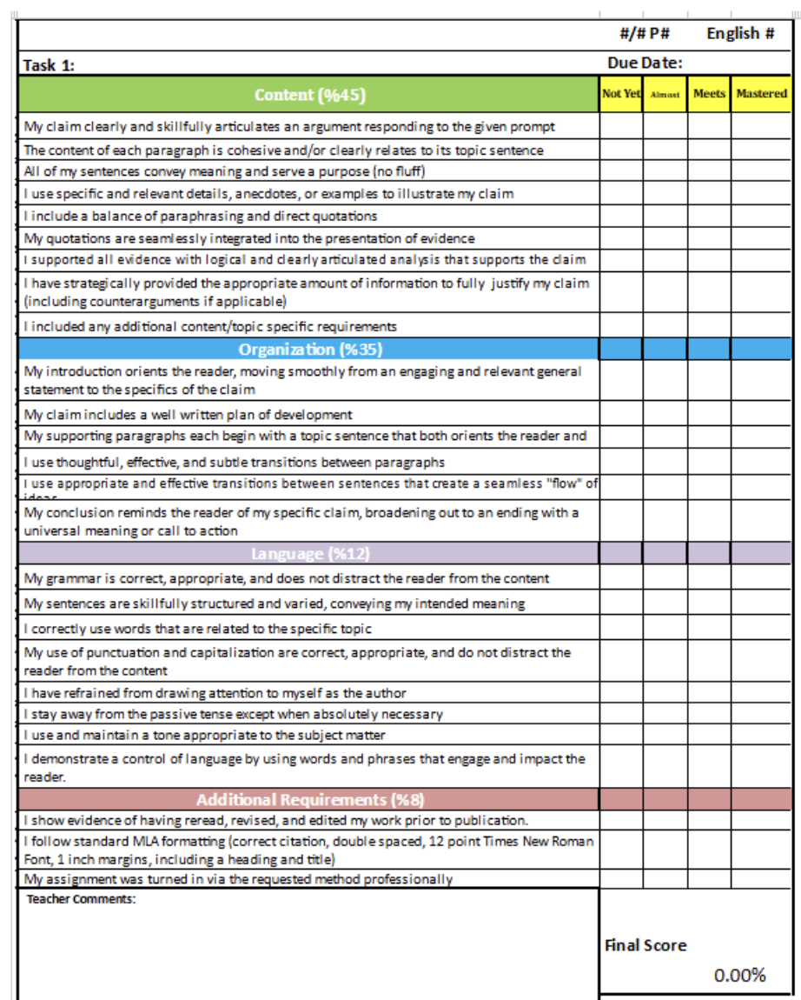
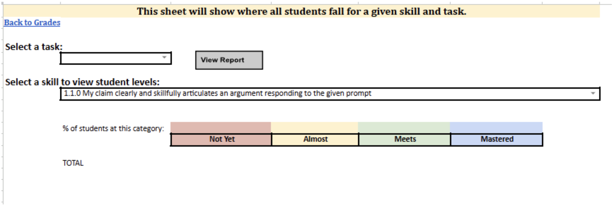
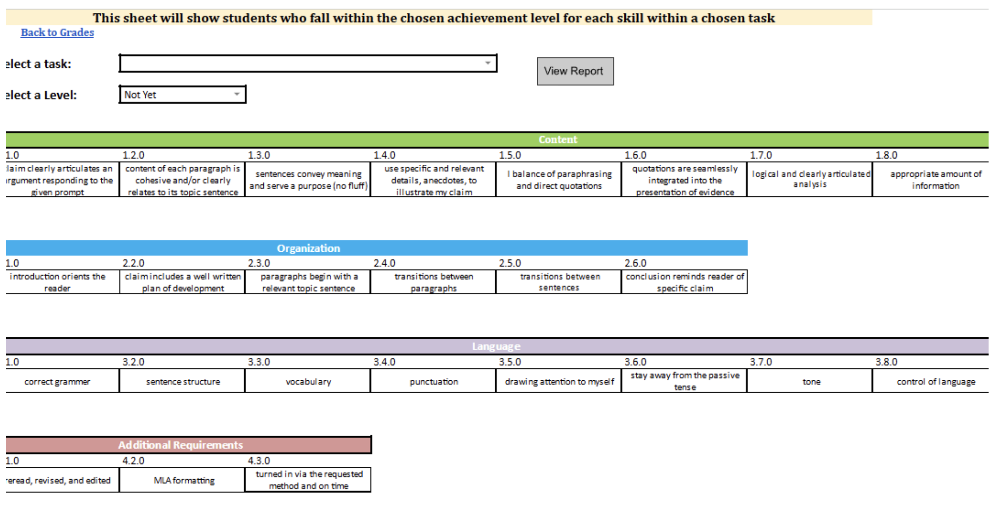

PM & Developer
Efficiency & Productivity Systems
Three automated Google Sheets tools — an eligibility checker, a progress-report emailer, and a writing-skill tracker — that reduced administrative load and improved outcomes.
The Plans and Executions
College Class Eligibility Checker
The Need
An early college high school faced challenges with dual enrollment, as shifts in student populations, skills, and values had led to fewer students being adequately prepared for college coursework. College instructors reported disruptive behavior, absenteeism, and incomplete coursework.
Challenges Before Implementation
Manual evaluation required counselors to review attendance, GPA, behavioral records, reading and math proficiency, and failed-course history — a process that was time-consuming and error-prone.
The Solution
An automated Google Sheets system that generates eligibility reports for college classes.
Efficiency Gains
Eliminated manual review, ensuring faster, more accurate eligibility determinations.


Automated Progress Reports & Email System
The Need
An understaffed front office struggled to send regular progress reports, despite the critical need for parent involvement.
Challenges Before Implementation
- Teachers rarely submitted grades manually.
- Printing and mailing reports cost time and money.
- Student-delivered reports were unreliable.
The Solution
A Google Sheets system that pulls data from five SIS reports, formats it visually, and emails PDFs directly to parents.
Efficiency Gains
Eliminated manual report generation, ensuring timely communication with students while reducing administrative burden.

Writing Skill Tracker & Feedback System
The Need
English teachers lacked quantifiable writing data despite extensive assessment work. Traditional rubrics lack the specificity needed to target instruction.
Challenges Before Implementation
Difficulty identifying improvement areas, facilitating collaborative discussions, grouping students, and delivering timely feedback.
The Solution
A Google Sheets application that tracks mastery of specific writing skills beyond traditional rubric categories, generates data reports, and delivers email feedback.
Efficiency Gains
Allowed English teachers to quickly assess student levels, generate data reports, and use those reports to offer differentiated learning.


